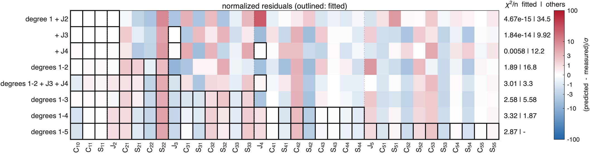
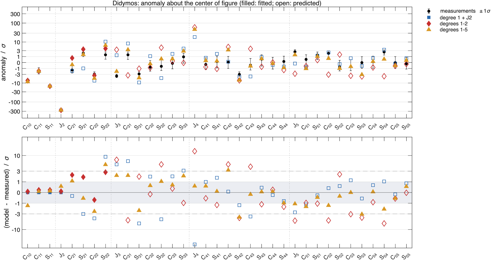

Fitting part of the coefficients#
Last edited October 27, 2026
A model can be fitted to some of the coefficients and tested on the others. This answers two questions: which coefficients determine which parts of a model (can degree 1 and alone place a core?), and whether a model fitted to the well-measured low degrees predicts the higher ones, which is a test on data it was not fitted to.
Functions#
| Step | Function |
|---|---|
| Keep some coefficients | sbtk.data.select_coefficients(obs, labels), sbtk.data.select_degree(obs, L) |
| Fit them | sbtk.invert.setup, sbtk.invert.run (or sbtk.invert.solve) |
| Predict every coefficient from the fit | sbtk.invert.predict(fit, body, obs) with the full set |
| Map the residuals of several fits | sbtk.plot.coefficient_residuals |
| Compare anomalies coefficient by coefficient | sbtk.plot.anomaly with sbtk.interpret.anomaly of each fit |
sbtk.invert.predict evaluates the fitted model (its components with their fitted geometry and densities) for
every measurement of the full set: for the fitted rows it gives the fit's own predictions, for the others new ones.
It reports the of each group with its own covariance (pred.chi2_fitted, pred.chi2_other). The fit
and the full set must give the same measured center of mass, so keep degree 1 in every subset of data about a fixed
point; otherwise the model's layers and sectors would be measured from another point and
sbtk:invert:predictOrigin stops the prediction.
A subset with fewer coefficients than free parameters leaves the fit underdetermined: fit.determined is false,
the solution is one of many, and its is 0 by construction. A core alone has four unknowns (its relative
density and three coordinates), which degree 1 and determine exactly; a core, a torus and a layer have six.
part = sbtk.data.select_coefficients(obs, ["C10" "C11" "S11" "C20"]); % degree 1 and J2
core = sbtk.interior.sphere("core", cm.center_km, 0.15, 0);
core.estimate_position = true;
fit1 = sbtk.invert.solve(body, core, part, opts);
pred1 = sbtk.invert.predict(fit1, body, obs);
fit3 = sbtk.invert.solve(body, model, sbtk.data.select_degree(obs, 3), opts);
pred3 = sbtk.invert.predict(fit3, body, obs);
fprintf('degree 1 + J2: chi2 per coefficient of the others %.3g\n', pred1.chi2_other/pred1.n_other);
fprintf('degrees 1-3: chi2 per coefficient of degrees 4-5 %.3g\n', pred3.chi2_other/pred3.n_other);
fig = sbtk.plot.coefficient_residuals({pred1, pred3}, ["core, degree 1 + J2", "three components, degrees 1-3"]);How well the fitted coefficients are matched#
A fit to part of the coefficients has to be judged on two groups: the coefficients it was fitted to, which it
matches by construction as well as its parameters allow, and the others, which it predicts.
sbtk.plot.coefficient_residuals shows both for several fits at once, one row per fit and one column per
measurement, with the fitted cells outlined; sbtk.plot.anomaly shows the anomaly of a few fits against the
measured one, filled where fitted and open where predicted.
tests/studies/coefficient_reading_figures.m does this for one of the study's true interiors (the first of the
family "core, torus, layer": a core of +776 kg/m³ and radius 121 m, 54 m from the center of figure, a torus of
−652 kg/m³ and a layer of −421 kg/m³), with noise at the Hera precision, fitted with the three-component model of
guessed sizes to each of the eight sets, the core placed by its profile and Gauss–Newton:
truth_051: core +776 kg/m^3, radius 121 m, 53.6 m from the center of figure; torus -652; layer -421
coefficients fitted chi2/n fitted chi2/n others core drho core error m
degree 1 + J2 4 4.67e-15 34.5 1799 38.6
+ J3 5 1.84e-14 9.92 883 28.5
+ J4 6 0.0058 12.2 -121 187.0
degrees 1-2 8 1.89 16.8 388 45.7
degrees 1-2 + J3 + J4 10 3.01 3.3 189 78.1
degrees 1-3 15 2.58 5.58 300 34.9
degrees 1-4 24 3.32 1.87 560 9.4
degrees 1-5 35 2.87 - 433 16.8

- With 4, 5 or 6 coefficients for 6 unknowns, the fit matches its coefficients exactly ( per coefficient 10⁻¹⁵ to 10⁻²): the row is white where it is outlined. That says nothing about the model; the other coefficients do (34.5, 9.9 and 12.2 per coefficient), and the core ends 29 to 187 m from the true one.
- From degrees 1–2 the fit has more coefficients than unknowns and its own rises (1.9 to 3.3 per coefficient): the model with these sizes cannot match the coefficients to their 1σ. brings the prediction of the others from 16.8 to 3.3; degrees 1–4 predict degree 5 at 1.9, and the core is then 9 m from the true one.
- is several σ off in every fit. The true interior has the same three kinds of component; the model's, of other sizes, do not make its at any densities and core position.
Results of the study#
What the study found reports the 15,840 fits of
tests/studies/coefficient_reading_study.m. For the choice of coefficients:
- A core that is alone is determined by degree 1 and , and the fit predicts every other coefficient as well as the noise allows (1.0 per coefficient). More coefficients do not improve its position (4–5 m at the Hera precision).
- A core with a torus and a layer needs : degree 1 + + predicts the others at 3.8 per coefficient against 21.5 without ; degrees 1–2 + + at 3.1; degrees 1–4 predict degree 5 at 1.5. adds little and, with noise, moves the core to fit the noise.
- Degrees 1–2 alone are not a test: 63% of those fits are consistent with their coefficients and still predict the others at 16 per coefficient; for interiors with no core at all, 60% and 45.
- The fixed-point iteration that moves the core to match degree 1 (
sbtk.invert.recenter) converges in about 3 steps for a core alone, and not at all when other components can match degree 1 themselves.